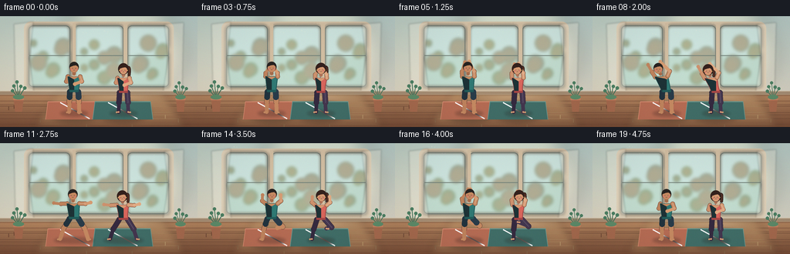
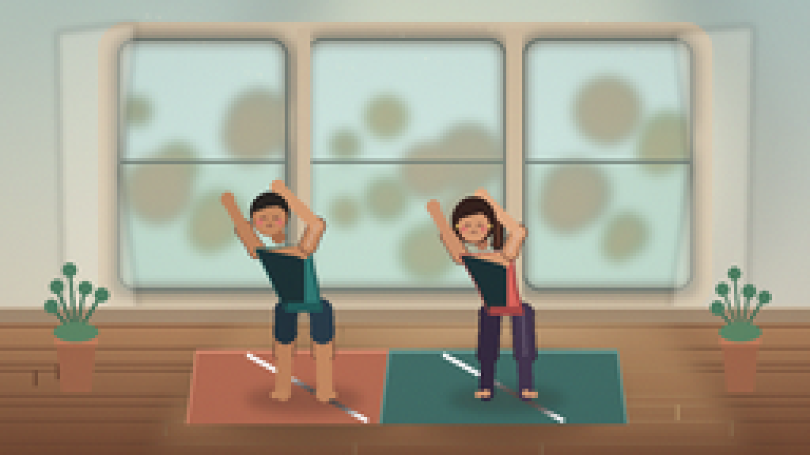
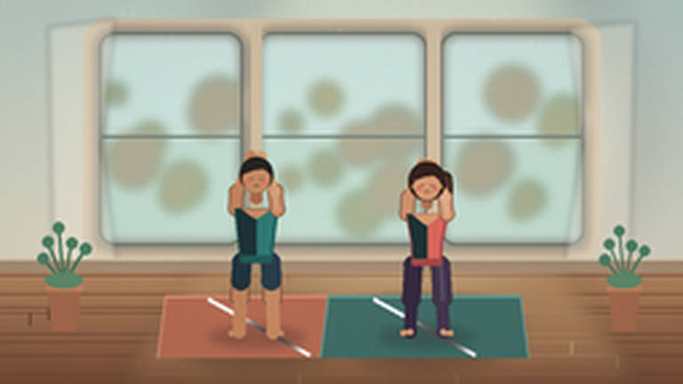
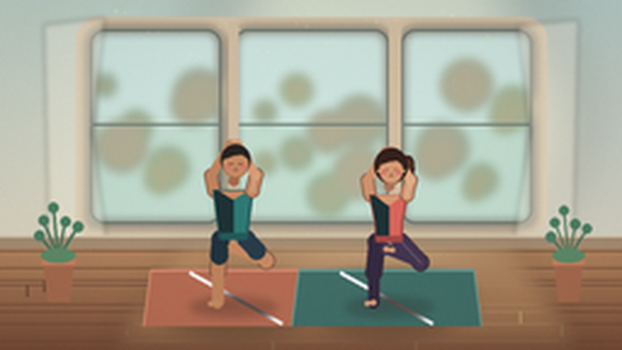
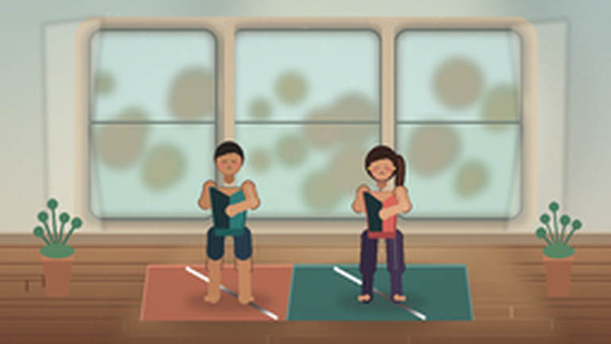
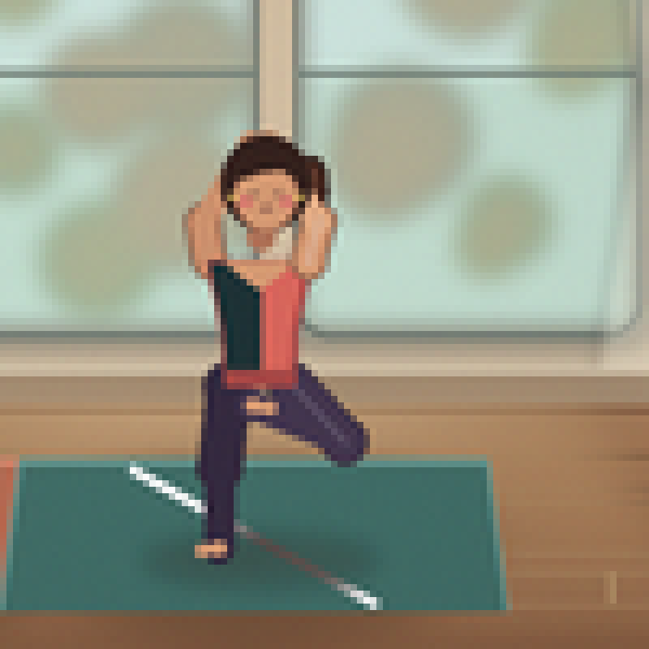
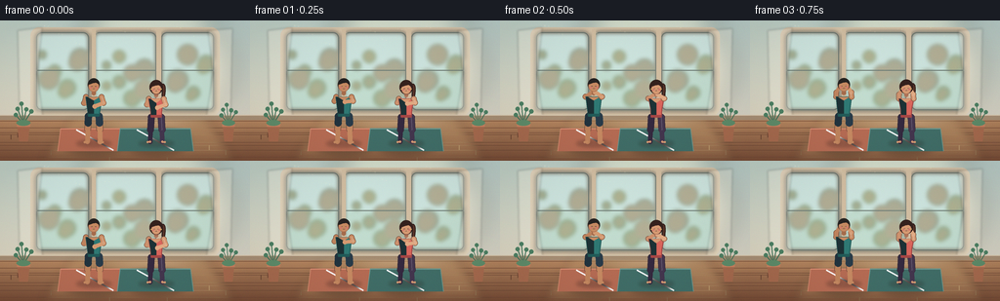
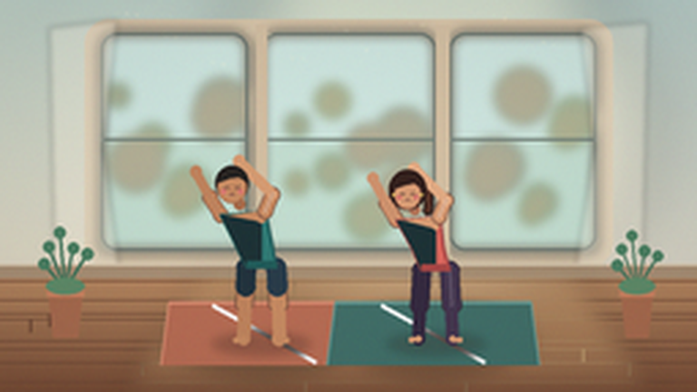
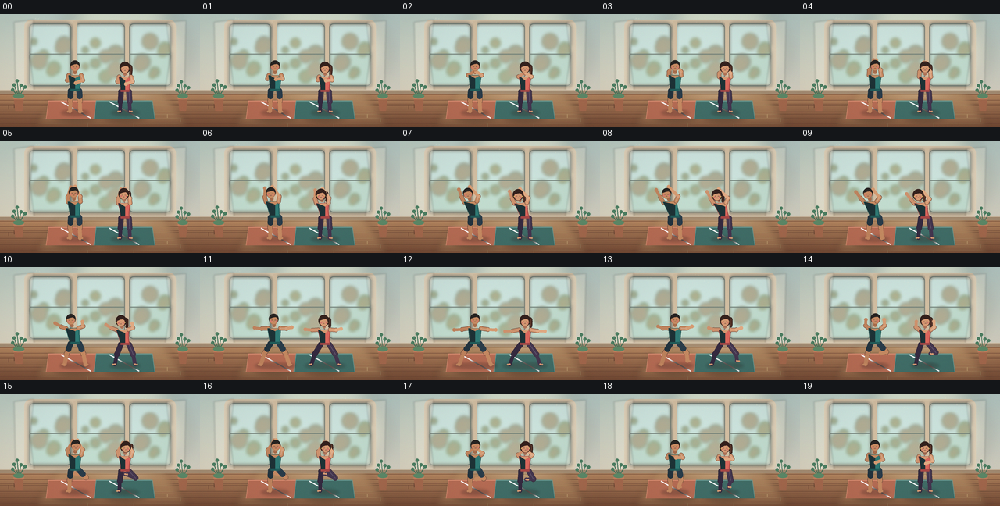

CODING AGENTS AS PIXEL WORLD MODELS
traex/DeepSeek-V4.1-Flash · instance_preservation_0030
点击播放 · 原生 RGB 像素
逐轮保存的候选
回放视频、检查图与代码变化。
每份候选均可单独播放。实际图片检查记录在下方工具轨迹中。
候选 01播放与检查图
点击播放 · 原生 RGB 像素

展开代码变化
--- 上一保存版本
+++ 本次保存版本
@@ -0,0 +1,678 @@
+from __future__ import annotations
+
+import math
+from pathlib import Path
+
+import numpy as np
+from PIL import Image, ImageDraw, ImageFilter
+
+import artifact_io
+
+
+ROOT = Path(__file__).resolve().parent
+BASE_W, BASE_H = 256, 144
+FPS = 4
+FRAME_COUNT = 20
+SS = 4
+W, H = BASE_W * SS, BASE_H * SS
+
+
+def rgb(value):
+ return tuple(int(value[i : i + 2], 16) for i in (1, 3, 5))
+
+
+def rgba(value, alpha=255):
+ return (*rgb(value), alpha)
+
+
+def mix(a, b, t):
+ return tuple(
+ int(round(a[i] + (b[min(i, len(b) - 1)] - a[i]) * t))
+ for i in range(len(a))
+ )
+
+
+def smoothstep(t):
+ return t * t * (3.0 - 2.0 * t)
+
+
+def pt(point, center_x, floor_y, scale):
+ x, y = point
+ return ((center_x + x * scale) * SS, (floor_y + y * scale) * SS)
+
+
+def box(points, center_x, floor_y, scale):
+ transformed = [pt(p, center_x, floor_y, scale) for p in points]
+ xs = [p[0] for p in transformed]
+ ys = [p[1] for p in transformed]
+ return (min(xs), min(ys), max(xs), max(ys))
+
+
+def capsule(draw, p1, p2, width, fill, center_x, floor_y, scale, outline=None):
+ a = pt(p1, center_x, floor_y, scale)
+ b = pt(p2, center_x, floor_y, scale)
+ radius = width * scale * SS * 0.5
+ if outline is not None:
+ draw.line((a, b), fill=outline, width=max(1, round(radius * 2 + SS)))
+ draw.ellipse(
+ (a[0] - radius - SS * 0.5, a[1] - radius - SS * 0.5,
+ a[0] + radius + SS * 0.5, a[1] + radius + SS * 0.5),
+ fill=outline,
+ )
+ draw.ellipse(
+ (b[0] - radius - SS * 0.5, b[1] - radius - SS * 0.5,
+ b[0] + radius + SS * 0.5, b[1] + radius + SS * 0.5),
+ fill=outline,
+ )
+ draw.line((a, b), fill=fill, width=max(1, round(radius * 2)))
+ draw.ellipse((a[0] - radius, a[1] - radius, a[0] + radius, a[1] + radius), fill=fill)
+ draw.ellipse((b[0] - radius, b[1] - radius, b[0] + radius, b[1] + radius), fill=fill)
+
+
+def dot(draw, point, radius, fill, center_x, floor_y, scale):
+ x, y = pt(point, center_x, floor_y, scale)
+ r = radius * scale * SS
+ draw.ellipse((x - r, y - r, x + r, y + r), fill=fill)
+
+
+def polygon(draw, points, fill, center_x, floor_y, scale, outline=None, width=1):
+ points = [pt(p, center_x, floor_y, scale) for p in points]
+ draw.polygon(points, fill=fill)
+ if outline is not None:
+ draw.line(points + [points[0]], fill=outline, width=width, joint="curve")
+
+
+def lerp_point(a, b, t):
+ return (a[0] + (b[0] - a[0]) * t, a[1] + (b[1] - a[1]) * t)
+
+
+def quadratic(p0, p1, p2, t):
+ u = 1.0 - t
+ return (
+ u * u * p0[0] + 2 * u * t * p1[0] + t * t * p2[0],
+ u * u * p0[1] + 2 * u * t * p1[1] + t * t * p2[1],
+ )
+
+
+POSE_MOUNTAIN = {
+ "head": (0.0, -58.7),
+ "neck": (0.0, -50.8),
+ "shoulder_l": (-8.0, -47.0),
+ "shoulder_r": (8.0, -47.0),
+ "hip_l": (-5.4, -27.2),
+ "hip_r": (5.4, -27.2),
+ "knee_l": (-6.2, -14.0),
+ "knee_r": (6.2, -14.0),
+ "ankle_l": (-6.5, -1.0),
+ "ankle_r": (6.5, -1.0),
+ "elbow_l": (-10.0, -40.7),
+ "elbow_r": (10.0, -40.7),
+ "hand_l": (-1.0, -37.3),
+ "hand_r": (1.0, -37.3),
+}
+
+POSE_UPWARD = {
+ "head": (0.0, -59.4),
+ "neck": (0.0, -51.2),
+ "shoulder_l": (-7.8, -47.3),
+ "shoulder_r": (7.8, -47.3),
+ "hip_l": (-5.3, -27.2),
+ "hip_r": (5.3, -27.2),
+ "knee_l": (-6.1, -14.0),
+ "knee_r": (6.1, -14.0),
+ "ankle_l": (-6.4, -1.0),
+ "ankle_r": (6.4, -1.0),
+ "elbow_l": (-7.2, -53.7),
+ "elbow_r": (7.2, -53.7),
+ "hand_l": (-1.7, -66.8),
+ "hand_r": (1.7, -66.8),
+}
+
+POSE_SIDE_BEND = {
+ "head": (-10.8, -57.4),
+ "neck": (-8.0, -50.4),
+ "shoulder_l": (-15.0, -46.5),
+ "shoulder_r": (1.4, -47.9),
+ "hip_l": (-5.4, -27.2),
+ "hip_r": (5.4, -27.2),
+ "knee_l": (-6.2, -14.0),
+ "knee_r": (6.2, -14.0),
+ "ankle_l": (-6.5, -1.0),
+ "ankle_r": (6.5, -1.0),
+ "elbow_l": (-18.8, -53.0),
+ "elbow_r": (4.0, -54.1),
+ "hand_l": (-24.0, -62.4),
+ "hand_r": (-8.2, -66.2),
+}
+
+POSE_WARRIOR = {
+ "head": (0.0, -58.4),
+ "neck": (0.0, -50.7),
+ "shoulder_l": (-8.0, -46.8),
+ "shoulder_r": (8.0, -46.8),
+ "hip_l": (-6.0, -27.1),
+ "hip_r": (6.0, -27.1),
+ "knee_l": (-15.0, -14.7),
+ "knee_r": (15.0, -14.7),
+ "ankle_l": (-20.2, -1.0),
+ "ankle_r": (20.2, -1.0),
+ "elbow_l": (-16.6, -45.5),
+ "elbow_r": (16.6, -45.5),
+ "hand_l": (-26.7, -45.0),
+ "hand_r": (26.7, -45.0),
+}
+
+POSE_TREE = {
+ "head": (1.2, -59.0),
+ "neck": (0.4, -51.0),
+ "shoulder_l": (-7.7, -47.1),
+ "shoulder_r": (8.0, -47.1),
+ "hip_l": (-5.2, -27.1),
+ "hip_r": (5.3, -27.1),
+ "knee_l": (-6.3, -14.0),
+ "knee_r": (14.0, -18.4),
+ "ankle_l": (-6.5, -1.0),
+ "ankle_r": (-1.4, -25.0),
+ "elbow_l": (-9.0, -54.0),
+ "elbow_r": (9.4, -54.0),
+ "hand_l": (-1.2, -67.0),
+ "hand_r": (1.5, -67.0),
+}
+
+KEY_POSES = [
+ (0.00, POSE_MOUNTAIN),
+ (0.21, POSE_UPWARD),
+ (0.42, POSE_SIDE_BEND),
+ (0.63, POSE_WARRIOR),
+ (0.82, POSE_TREE),
+ (1.00, POSE_MOUNTAIN),
+]
+
+
+def sample_pose(t):
+ for index in range(len(KEY_POSES) - 1):
+ t0, pose0 = KEY_POSES[index]
+ t1, pose1 = KEY_POSES[index + 1]
+ if t <= t1:
+ u = smoothstep(max(0.0, min(1.0, (t - t0) / (t1 - t0))))
+ return {name: lerp_point(pose0[name], pose1[name], u) for name in pose0}
+ return dict(KEY_POSES[-1][1])
+
+
+def make_background():
+ yy = np.linspace(0.0, 1.0, H, dtype=np.float32)[:, None]
+ xx = np.linspace(0.0, 1.0, W, dtype=np.float32)[None, :]
+ wall_top = np.array([188, 207, 200], dtype=np.float32)
+ wall_bottom = np.array([232, 215, 193], dtype=np.float32)
+ wall = wall_top[None, None, :] * (1 - yy[:, :, None]) + wall_bottom[None, None, :] * yy[:, :, None]
+ wall = wall + (0.5 - xx[:, :, None]) * np.array([6.0, 3.0, -2.0])
+
+ floor_start = int(100 * SS)
+ floor_t = np.clip((np.arange(H, dtype=np.float32) - floor_start) / (H - floor_start), 0, 1)[:, None, None]
+ floor_top = np.array([184, 137, 98], dtype=np.float32)
+ floor_bottom = np.array([119, 76, 54], dtype=np.float32)
+ floor = floor_top[None, None, :] * (1 - floor_t) + floor_bottom[None, None, :] * floor_t
+ floor = np.broadcast_to(floor, (H, W, 3)).copy()
+ wall[floor_start:, :, :] = floor[floor_start:, :, :]
+ wall = np.clip(wall, 0, 255).astype(np.uint8)
+ image = Image.fromarray(wall).convert("RGBA")
+ draw = ImageDraw.Draw(image)
+
+ # Soft daylight spill behind the window.
+ glow = Image.new("RGBA", (W, H), (0, 0, 0, 0))
+ gd = ImageDraw.Draw(glow)
+ gd.ellipse((72 * SS, -18 * SS, 238 * SS, 116 * SS), fill=(255, 245, 208, 84))
+ glow = glow.filter(ImageFilter.GaussianBlur(12 * SS))
+ image.alpha_composite(glow)
+ draw = ImageDraw.Draw(image)
+
+ # Window surround and panes.
+ draw.rounded_rectangle(
+ (31 * SS, 7 * SS, 225 * SS, 98 * SS),
+ radius=9 * SS,
+ fill=rgba("#D7C5AA"),
+ )
+ pane_boxes = [(37, 12, 91, 92), (96, 12, 160, 92), (165, 12, 219, 92)]
+ outside = Image.new("RGBA", (W, H), (0, 0, 0, 0))
+ od = ImageDraw.Draw(outside)
+ for i, (x0, y0, x1, y1) in enumerate(pane_boxes):
+ od.rounded_rectangle(
+ (x0 * SS, y0 * SS, x1 * SS, y1 * SS),
+ radius=6 * SS,
+ fill=(205, 228, 222, 255),
+ )
+ od.rectangle(
+ (x0 * SS, 51 * SS, x1 * SS, y1 * SS),
+ fill=(194, 220, 207, 255),
+ )
+ # Foliage seen through the glass, intentionally soft and low contrast.
+ for j in range(8):
+ cx = (x0 + 6 + ((j * 13 + i * 7) % max(8, x1 - x0 - 12))) * SS
+ cy = (35 + ((j * 17 + i * 11) % 47)) * SS
+ radius = (4 + (j % 4) * 2) * SS
+ shade = (95 + j * 4, 135 + (j % 3) * 7, 105 + (j % 4) * 5, 100)
+ od.ellipse((cx - radius, cy - radius, cx + radius, cy + radius), fill=shade)
+ outside = outside.filter(ImageFilter.GaussianBlur(2.2 * SS))
+ image.alpha_composite(outside)
+ draw = ImageDraw.Draw(image)
+
+ for x0, y0, x1, y1 in pane_boxes:
+ draw.rounded_rectangle(
+ (x0 * SS, y0 * SS, x1 * SS, y1 * SS),
+ radius=6 * SS,
+ outline=rgba("#6C766F", 205),
+ width=max(1, round(1.1 * SS)),
+ )
+ draw.line((x0 * SS, 51 * SS, x1 * SS, 51 * SS), fill=rgba("#728078", 175), width=SS)
+ draw.rectangle((94 * SS, 9 * SS, 98 * SS, 95 * SS), fill=rgba("#D2BEA2"))
+ draw.rectangle((160 * SS, 9 * SS, 165 * SS, 95 * SS), fill=rgba("#D2BEA2"))
+
+ # Sheer curtains frame the window without obscuring the performers.
+ curtain = Image.new("RGBA", (W, H), (0, 0, 0, 0))
+ cd = ImageDraw.Draw(curtain)
+ cd.polygon(
+ [(18 * SS, 10 * SS), (43 * SS, 7 * SS), (38 * SS, 55 * SS),
+ (44 * SS, 101 * SS), (20 * SS, 99 * SS)],
+ fill=(250, 244, 226, 80),
+ )
+ cd.polygon(
+ [(238 * SS, 8 * SS), (213 * SS, 10 * SS), (218 * SS, 54 * SS),
+ (211 * SS, 101 * SS), (236 * SS, 98 * SS)],
+ fill=(250, 244, 226, 74),
+ )
+ curtain = curtain.filter(ImageFilter.GaussianBlur(1.1 * SS))
+ image.alpha_composite(curtain)
+ draw = ImageDraw.Draw(image)
+
+ # Baseboard and wooden floor.
+ draw.rectangle((0, 97 * SS, W, 102 * SS), fill=rgba("#A78E74"))
+ draw.line((0, 97 * SS, W, 97 * SS), fill=rgba("#D8C8B0"), width=SS)
+ rng = np.random.default_rng(19)
+ for y in range(103, 145, 5):
+ offset = rng.integers(-2, 3)
+ draw.line(
+ (0, (y + offset) * SS, W, (y + offset) * SS),
+ fill=rgba("#704A37", 65),
+ width=max(1, round(0.55 * SS)),
+ )
+ for _ in range(2):
+ sx = int(rng.integers(4, BASE_W - 4)) * SS
+ sy = (y + offset) * SS
+ draw.line((sx, sy, sx, sy + 5 * SS), fill=rgba("#704A37", 45), width=SS)
+
+ # Warm light patch projected across the floor.
+ spill = Image.new("RGBA", (W, H), (0, 0, 0, 0))
+ sd = ImageDraw.Draw(spill)
+ sd.polygon(
+ [(75 * SS, 99 * SS), (211 * SS, 99 * SS), (242 * SS, 143 * SS), (43 * SS, 143 * SS)],
+ fill=(255, 222, 155, 38),
+ )
+ spill = spill.filter(ImageFilter.GaussianBlur(5 * SS))
+ image.alpha_composite(spill)
+ draw = ImageDraw.Draw(image)
+
+ # Yoga mats, with a soft drop shadow and a narrow light edge.
+ shadow = Image.new("RGBA", (W, H), (0, 0, 0, 0))
+ sh = ImageDraw.Draw(shadow)
+ for cx in (97, 159):
+ sh.ellipse(
+ ((cx - 35) * SS, 112 * SS, (cx + 35) * SS, 137 * SS),
+ fill=(53, 38, 31, 95),
+ )
+ shadow = shadow.filter(ImageFilter.GaussianBlur(3.2 * SS))
+ image.alpha_composite(shadow)
+ draw = ImageDraw.Draw(image)
+
+ mats = [
+ ((97, "#B66C54", "#D68C70"), 61, 133, 35.0, 38.0),
+ ((159, "#416E68", "#6E9990"), 123, 195, 36.0, 39.0),
+ ]
+ for (cx, base_color, edge_color), x0, x1, top_half, bottom_half in mats:
+ top = 111
+ bottom = 134
+ poly = [
+ ((cx - top_half) * SS, top * SS),
+ ((cx + top_half) * SS, top * SS),
+ ((cx + bottom_half) * SS, bottom * SS),
+ ((cx - bottom_half) * SS, bottom * SS),
+ ]
+ draw.polygon(poly, fill=rgba(base_color))
+ draw.line(
+ [(cx - top_half) * SS, top * SS, (cx + top_half) * SS, top * SS],
+ fill=rgba(edge_color),
+ width=max(1, round(1.2 * SS)),
+ )
+ draw.line(
+ [(cx + top_half) * SS, top * SS, (cx + bottom_half) * SS, bottom * SS],
+ fill=rgba(edge_color, 190),
+ width=max(1, round(0.8 * SS)),
+ )
+ draw.line(
+ [(cx - top_half) * SS, top * SS, (cx - bottom_half) * SS, bottom * SS],
+ fill=rgba(edge_color, 150),
+ width=max(1, round(0.8 * SS)),
+ )
+ draw.line(
+ ((cx - 19) * SS, 112 * SS, (cx + 19) * SS, 133 * SS),
+ fill=(255, 255, 255, 22),
+ width=max(1, round(1.5 * SS)),
+ )
+
+ # A small potted plant at each edge gives the studio depth.
+ for cx, scale in ((24.0, 0.90), (234.0, 0.84)):
+ pot_top = 107
+ draw.polygon(
+ [(cx - 7 * scale) * SS, pot_top * SS, (cx + 7 * scale) * SS, pot_top * SS,
+ (cx + 5 * scale) * SS, 124 * SS, (cx - 5 * scale) * SS, 124 * SS],
+ fill=rgba("#A66A4E"),
+ )
+ draw.rectangle(
+ ((cx - 7.5 * scale) * SS, 105 * SS, (cx + 7.5 * scale) * SS, 109 * SS),
+ fill=rgba("#C68160"),
+ )
+ for j, angle in enumerate((-2.55, -2.15, -1.72, -1.25, -0.75)):
+ length = (16 + (j % 3) * 3) * scale
+ ex = cx + math.cos(angle) * length * 0.65
+ ey = 105 + math.sin(angle) * length
+ draw.line(
+ (cx * SS, 106 * SS, ex * SS, ey * SS),
+ fill=rgba("#3F7258"),
+ width=max(1, round(1.0 * scale * SS)),
+ )
+ radius = 2.4 * scale * SS
+ draw.ellipse(
+ (ex * SS - radius, ey * SS - radius, ex * SS + radius, ey * SS + radius),
+ fill=rgba("#4D8063"),
+ )
+ draw.ellipse(
+ ((cx - 8 * scale) * SS, 102 * SS, (cx + 8 * scale) * SS, 108 * SS),
+ fill=rgba("#5E8B69"),
+ )
+
+ return image
+
+
+def draw_ponytail(draw, head, center_x, floor_y, scale, color, t, phase):
+ root = (head[0] + 4.7, head[1] - 0.8)
+ ctrl = (head[0] + 9.2, head[1] - 7.5 + math.sin(t * 5.0 + phase) * 0.5)
+ end = (head[0] + 7.7, head[1] + 7.0 + math.sin(t * 4.2 + phase) * 0.8)
+ points = [quadratic(root, ctrl, end, i / 12) for i in range(13)]
+ for width, shade in ((3.7, color), (1.5, rgba("#5A3529"))):
+ for a, b in zip(points[:-1], points[1:]):
+ capsule(draw, a, b, width, shade, center_x, floor_y, scale)
+
+
+def draw_shadow(image, pose, center_x, floor_y, scale, strength=72):
+ shadow = Image.new("RGBA", (W, H), (0, 0, 0, 0))
+ draw = ImageDraw.Draw(shadow)
+ min_x = min(pose["ankle_l"][0], pose["ankle_r"][0], -8)
+ max_x = max(pose["ankle_l"][0], pose["ankle_r"][0], 8)
+ width = max(18.0, (max_x - min_x) * 0.72)
+ x0 = (center_x - width) * SS
+ x1 = (center_x + width) * SS
+ y0 = (floor_y - 3.2) * SS
+ y1 = (floor_y + 4.8) * SS
+ draw.ellipse((x0, y0, x1, y1), fill=(51, 36, 31, strength))
+ for ankle in (pose["ankle_l"], pose["ankle_r"]):
+ x = (center_x + ankle[0] * scale) * SS
+ y = (floor_y - 0.4) * SS
+ draw.ellipse((x - 4.2 * SS, y - 1.0 * SS, x + 4.2 * SS, y + 1.5 * SS), fill=(48, 31, 28, 90))
+ shadow = shadow.filter(ImageFilter.GaussianBlur(1.7 * SS))
+ image.alpha_composite(shadow)
+
+
+def draw_figure(image, pose, center_x, floor_y, config, t, phase):
+ scale = config["scale"]
+ draw = ImageDraw.Draw(image, "RGBA")
+ skin = config["skin"]
+ skin_shadow = config["skin_shadow"]
+ skin_light = config["skin_light"]
+ top = config["top"]
+ top_shadow = config["top_shadow"]
+ bottom = config["bottom"]
+ bottom_shadow = config["bottom_shadow"]
+ hair = config["hair"]
+
+ head = pose["head"]
+ shoulder_l = pose["shoulder_l"]
+ shoulder_r = pose["shoulder_r"]
+ hip_l = pose["hip_l"]
+ hip_r = pose["hip_r"]
+ knee_l = pose["knee_l"]
+ knee_r = pose["knee_r"]
+ ankle_l = pose["ankle_l"]
+ ankle_r = pose["ankle_r"]
+ elbow_l = pose["elbow_l"]
+ elbow_r = pose["elbow_r"]
+ hand_l = pose["hand_l"]
+ hand_r = pose["hand_r"]
+
+ if config["woman"]:
+ draw_ponytail(draw, head, center_x, floor_y, scale, hair, t, phase)
+
+ # Far arm and leg sit slightly darker to create depth.
+ far_skin = mix(skin, skin_shadow, 0.22)
+ capsule(draw, shoulder_l, elbow_l, 4.6, far_skin, center_x, floor_y, scale, outline=rgba("#754E3E", 170))
+ capsule(draw, elbow_l, hand_l, 3.8, far_skin, center_x, floor_y, scale)
+ dot(draw, hand_l, 2.2, far_skin, center_x, floor_y, scale)
+
+ if config["woman"]:
+ capsule(draw, hip_l, knee_l, 6.3, bottom_shadow, center_x, floor_y, scale, outline=rgba("#352A36", 190))
+ capsule(draw, knee_l, ankle_l, 4.9, bottom_shadow, center_x, floor_y, scale)
+ capsule(draw, hip_r, knee_r, 6.5, bottom, center_x, floor_y, scale, outline=rgba("#352A36", 190))
+ capsule(draw, knee_r, ankle_r, 5.0, bottom, center_x, floor_y, scale)
+ capsule(draw, hip_r, knee_r, 1.0, mix(bottom, (255, 255, 255), 0.14), center_x, floor_y, scale)
+ else:
+ capsule(draw, hip_l, knee_l, 5.8, far_skin, center_x, floor_y, scale, outline=rgba("#714A3C", 160))
+ capsule(draw, knee_l, ankle_l, 4.9, far_skin, center_x, floor_y, scale)
+ capsule(draw, hip_r, knee_r, 6.1, skin, center_x, floor_y, scale, outline=rgba("#714A3C", 160))
+ capsule(draw, knee_r, ankle_r, 5.1, skin, center_x, floor_y, scale)
+ thigh_mid_l = lerp_point(hip_l, knee_l, 0.52)
+ thigh_mid_r = lerp_point(hip_r, knee_r, 0.52)
+ capsule(draw, hip_l, thigh_mid_l, 7.3, bottom_shadow, center_x, floor_y, scale)
+ capsule(draw, hip_r, thigh_mid_r, 7.5, bottom, center_x, floor_y, scale)
+
+ # Feet are kept simple but directional enough to read at video resolution.
+ for ankle, direction in ((ankle_l, -1), (ankle_r, 1)):
+ capsule(
+ draw,
+ ankle,
+ (ankle[0] + direction * 2.8, ankle[1] + 0.4),
+ 2.2,
+ skin,
+ center_x,
+ floor_y,
+ scale,
+ )
+
+ # Fitted athletic top.
+ waist_r = lerp_point(shoulder_r, hip_r, 0.58)
+ waist_l = lerp_point(shoulder_l, hip_l, 0.58)
+ if config["woman"]:
+ waist_l = (waist_l[0] + 0.7, waist_l[1])
+ waist_r = (waist_r[0] - 0.7, waist_r[1])
+ torso = [shoulder_l, shoulder_r, waist_r, hip_r, hip_l, waist_l]
+ polygon(draw, torso, top, center_x, floor_y, scale, outline=top_shadow, width=max(1, SS))
+ # Subtle side shading and a clean athletic neckline.
+ shade = [
+ shoulder_l,
+ (0.0, shoulder_l[1] + 0.6),
+ (0.0, hip_l[1] - 0.8),
+ hip_l,
+ waist_l,
+ ]
+ polygon(draw, shade, rgba("#1D3236", 28), center_x, floor_y, scale)
+ neckline_depth = -44.2 if config["woman"] else -45.0
+ neckline = [
+ (shoulder_l[0] + 2.2, shoulder_l[1] + 0.1),
+ (shoulder_r[0] - 2.2, shoulder_r[1] + 0.1),
+ (1.8, neckline_depth + 0.5),
+ (0.0, neckline_depth + 1.7),
+ (-1.8, neckline_depth + 0.5),
+ ]
+ polygon(draw, neckline, skin, center_x, floor_y, scale)
+ # Waistband.
+ band_top = lerp_point(hip_l, hip_r, 0.0)
+ polygon(
+ draw,
+ [(hip_l[0], hip_l[1] - 2.4), (hip_r[0], hip_r[1] - 2.4), hip_r, hip_l],
+ top_shadow,
+ center_x,
+ floor_y,
+ scale,
+ )
+
+ # Neck and near arm.
+ capsule(draw, pose["neck"], head, 4.3, skin_shadow, center_x, floor_y, scale)
+ capsule(draw, shoulder_r, elbow_r, 4.8, skin, center_x, floor_y, scale, outline=rgba("#754E3E", 175))
+ capsule(draw, elbow_r, hand_r, 4.0, skin_light, center_x, floor_y, scale)
+ capsule(draw, shoulder_r, elbow_r, 1.0, mix(skin, (255, 255, 255), 0.24), center_x, floor_y, scale)
+ dot(draw, hand_r, 2.3, skin_light, center_x, floor_y, scale)
+
+ # Hair silhouette, then face on top.
+ hair_back_rx = 7.2 if config["woman"] else 6.2
+ hair_back_ry = 7.7 if config["woman"] else 6.6
+ hx, hy = pt((head[0], head[1] - 0.7), center_x, floor_y, scale)
+ draw.ellipse(
+ (hx - hair_back_rx * scale * SS, hy - hair_back_ry * scale * SS,
+ hx + hair_back_rx * scale * SS, hy + hair_back_ry * scale * SS),
+ fill=hair,
+ )
+ face_shift = 1.1 if config["woman"] else 0.8
+ fx, fy = pt((head[0], head[1] + face_shift), center_x, floor_y, scale)
+ face_rx = 5.15 if config["woman"] else 5.35
+ face_ry = 5.75 if config["woman"] else 5.65
+ draw.ellipse(
+ (fx - face_rx * scale * SS, fy - face_ry * scale * SS,
+ fx + face_rx * scale * SS, fy + face_ry * scale * SS),
+ fill=skin,
+ outline=skin_shadow,
+ width=max(1, round(0.45 * SS)),
+ )
+ # Hairline / fringe.
+ fringe = [
+ (head[0] - face_rx + 0.4, head[1] - 1.0),
+ (head[0] - 4.6, head[1] - 4.8),
+ (head[0] - 0.3, head[1] - 5.8),
+ (head[0] + 4.5, head[1] - 4.4),
+ (head[0] + face_rx - 0.3, head[1] - 1.2),
+ (head[0] + 2.7, head[1] - 3.0),
+ (head[0] - 1.0, head[1] - 2.4),
+ ]
+ polygon(draw, fringe, hair, center_x, floor_y, scale)
+
+ # Closed eyes, nose, and a small serene smile.
+ eye_y = head[1] + 0.8
+ for ex in (head[0] - 1.9, head[0] + 1.9):
+ p0 = pt((ex - 0.65, eye_y + 0.15), center_x, floor_y, scale)
+ p1 = pt((ex, eye_y - 0.15), center_x, floor_y, scale)
+ p2 = pt((ex + 0.65, eye_y + 0.15), center_x, floor_y, scale)
+ draw.line((p0, p1, p2), fill=rgba("#593E37"), width=max(1, round(0.55 * SS)), joint="curve")
+ nose = pt((head[0], head[1] + 2.1), center_x, floor_y, scale)
+ draw.line(
+ (nose[0], nose[1] - 0.35 * SS, nose[0] + 0.4 * SS, nose[1] + 0.35 * SS),
+ fill=mix(skin, skin_shadow, 0.45),
+ width=max(1, round(0.42 * SS)),
+ )
+ smile_p0 = pt((head[0] - 1.2, head[1] + 2.5), center_x, floor_y, scale)
+ smile_p1 = pt((head[0] + 1.2, head[1] + 3.5), center_x, floor_y, scale)
+ smile_box = (smile_p0[0], smile_p0[1], smile_p1[0], smile_p1[1])
+ draw.arc(smile_box, 20, 160, fill=rgba("#7A4D46"), width=max(1, round(0.45 * SS)))
+ for cheek_x in (head[0] - 3.2, head[0] + 3.2):
+ dot(draw, (cheek_x, head[1] + 2.2), 1.0, rgba("#D4786D", 38), center_x, floor_y, scale)
+
+ if config["woman"]:
+ for ear_x in (head[0] - 5.3, head[0] + 5.3):
+ dot(draw, (ear_x, head[1] + 1.4), 0.55, rgba("#D9B45F"), center_x, floor_y, scale)
+
+
+MAN = {
+ "woman": False,
+ "scale": 1.00,
+ "skin": rgba("#C68A62"),
+ "skin_shadow": rgba("#A56B4B"),
+ "skin_light": rgba("#D59B72"),
+ "top": rgba("#2F7974"),
+ "top_shadow": rgba("#225B59"),
+ "bottom": rgba("#293C4A"),
+ "bottom_shadow": rgba("#22333E"),
+ "hair": rgba("#272321"),
+}
+
+WOMAN = {
+ "woman": True,
+ "scale": 0.96,
+ "skin": rgba("#D69A73"),
+ "skin_shadow": rgba("#AF7358"),
+ "skin_light": rgba("#E1AA83"),
+ "top": rgba("#D9665C"),
+ "top_shadow": rgba("#A64746"),
+ "bottom": rgba("#44364F"),
+ "bottom_shadow": rgba("#352A40"),
+ "hair": rgba("#34211D"),
+}
+
+
+def add_atmosphere(image, frame_index, t):
+ overlay = Image.new("RGBA", (W, H), (0, 0, 0, 0))
+ draw = ImageDraw.Draw(overlay)
+ for index in range(24):
+ base_x = 42 + ((index * 47) % 171)
+ base_y = 19 + ((index * 29) % 79)
+ x = (base_x + math.sin(t * 1.1 + index * 1.7) * 2.2) * SS
+ y = (base_y - t * (2.5 + index % 4) + math.cos(t * 0.8 + index) * 1.4) % (99 * SS)
+ radius = (0.35 + (index % 3) * 0.18) * SS
+ alpha = 24 + (index % 4) * 8
+ draw.ellipse((x - radius, y - radius, x + radius, y + radius), fill=(255, 247, 214, alpha))
+ image.alpha_composite(overlay)
+
+
+def finalize(image, frame_index):
+ frame = image.convert("RGB").resize((BASE_W, BASE_H), Image.Resampling.LANCZOS)
+ pixels = np.asarray(frame, dtype=np.float32)
+ yy, xx = np.mgrid[0:BASE_H, 0:BASE_W]
+ nx = (xx - BASE_W * 0.5) / (BASE_W * 0.5)
+ ny = (yy - BASE_H * 0.5) / (BASE_H * 0.5)
+ vignette = 1.0 - 0.075 * np.clip(nx * nx * 0.65 + ny * ny * 0.55, 0, 1)
+ pixels *= vignette[:, :, None]
+ rng = np.random.default_rng(1000 + frame_index)
+ pixels += rng.normal(0.0, 0.75, pixels.shape)
+ return np.clip(pixels, 0, 255).astype(np.uint8)
+
+
+def main():
+ background = make_background()
+ frames = []
+ for frame_index in range(FRAME_COUNT):
+ t = frame_index / (FRAME_COUNT - 1)
+ image = background.copy()
+ pose = sample_pose(t)
+
+ breath = math.sin(2 * math.pi * t * 1.25)
+ sway = math.sin(2 * math.pi * t * 0.75 + 0.4)
+ # Shared breath and a tiny counter-sway keep the held poses alive.
+ animated_pose = dict(pose)
+ for name in ("head", "neck", "shoulder_l", "shoulder_r"):
+ x, y = animated_pose[name]
+ animated_pose[name] = (x + sway * 0.12, y + breath * 0.20)
+ animated_pose["hand_l"] = (
+ animated_pose["hand_l"][0],
+ animated_pose["hand_l"][1] + breath * 0.16,
+ )
+ animated_pose["hand_r"] = (
+ animated_pose["hand_r"][0],
+ animated_pose["hand_r"][1] + breath * 0.16,
+ )
+
+ draw_shadow(image, animated_pose, 96.0, 125.5, MAN["scale"], strength=68)
+ draw_shadow(image, animated_pose, 160.0, 125.5, WOMAN["scale"], strength=64)
+ draw_figure(image, animated_pose, 96.0, 125.5, MAN, t, 0.2)
+ draw_figure(image, animated_pose, 160.0, 125.5, WOMAN, t, 1.0)
+ add_atmosphere(image, frame_index, t)
+ frames.append(finalize(image, frame_index))
+
+ artifact_io.save(frames, ROOT)
+
+
+if __name__ == "__main__":
+ main()
候选 02播放与检查图
点击播放 · 原生 RGB 像素

展开代码变化
--- 上一保存版本
+++ 本次保存版本
@@ -163,20 +163,20 @@
}
POSE_TREE = {
- "head": (1.2, -59.0),
- "neck": (0.4, -51.0),
- "shoulder_l": (-7.7, -47.1),
- "shoulder_r": (8.0, -47.1),
+ "head": (-3.6, -58.8),
+ "neck": (-2.7, -50.9),
+ "shoulder_l": (-10.5, -47.0),
+ "shoulder_r": (5.3, -47.4),
"hip_l": (-5.2, -27.1),
"hip_r": (5.3, -27.1),
"knee_l": (-6.3, -14.0),
- "knee_r": (14.0, -18.4),
+ "knee_r": (13.8, -17.0),
"ankle_l": (-6.5, -1.0),
- "ankle_r": (-1.4, -25.0),
- "elbow_l": (-9.0, -54.0),
- "elbow_r": (9.4, -54.0),
- "hand_l": (-1.2, -67.0),
- "hand_r": (1.5, -67.0),
+ "ankle_r": (-1.8, -23.5),
+ "elbow_l": (-6.7, -55.8),
+ "elbow_r": (4.6, -55.4),
+ "hand_l": (-1.0, -68.1),
+ "hand_r": (0.3, -68.4),
}
KEY_POSES = [
候选 03播放与检查图
可观测工具轨迹
实际执行的命令与返回图片。
命令 1exit 0
/bin/bash -c "pwd && rg --files -g 'prompt.txt' -g 'GENERATION_RULES.md' -g 'task_spec.json' -g '"'!node_modules'"'"
命令 2exit 0
/bin/bash -c 'git status --short && ls -la'
命令 3exit 0
/bin/bash -c 'cat prompt.txt'
命令 4exit 0
/bin/bash -c 'cat GENERATION_RULES.md'
命令 5exit 0
/bin/bash -c 'cat task_spec.json'
命令 6exit 0
/bin/bash -c "sed -n '1,240p' artifact_io.py"
命令 7exit 1
/bin/bash -c 'python generate.py'
命令 8exit 0
/bin/bash -c 'python generate.py'
命令 9exit 0
/bin/bash -c "python - <<'PY'
from PIL import Image
im=Image.open('frames/08.png')
im.resize((1024,576), Image.Resampling.NEAREST).save('.tmp/frame08_zoom.png')
PY"命令 10exit 0
/bin/bash -c "python - <<'PY'
from PIL import Image
for i in (0,4,8,12,16,19):
Image.open(f'frames/{i:02d}.png').resize((768,432), Image.Resampling.LANCZOS).save(f'.tmp/frame{i:02d}_zoom.png')
PY"命令 11exit 0
/bin/bash -c "python - <<'PY'
from PIL import Image
im=Image.open('frames/16.png')
im.crop((120,40,220,140)).resize((800,800), Image.Resampling.NEAREST).save('.tmp/tree_detail.png')
PY"命令 12exit 0
/bin/bash -c "nl -ba generate.py | sed -n '425,570p'"
命令 13exit 0
/bin/bash -c "python - <<'PY'
from PIL import Image
import numpy as np
from pathlib import Path
ims=[]
for p in sorted(Path('frames').glob('*.png')):
a=np.asarray(Image.open(p), dtype=np.int16)
ims.append(a)
for i in range(1,len(ims)):
d=np.abs(ims[i]-ims[i-1]).mean()
changed=(np.abs(ims[i]-ims[i-1]).max(axis=2)>8).mean()
print(i, f'mae={d:.2f}', f'changed={changed:.3f}')
PY"命令 14exit 0
/bin/bash -c "nl -ba generate.py | sed -n '170,240p'"
命令 15exit 0
/bin/bash -c "python - <<'PY'
from PIL import Image, ImageDraw
from pathlib import Path
paths=sorted(Path('frames').glob('*.png'))
sheet=Image.new('RGB',(256*5, (144+18)*4),(20,22,25))
d=ImageDraw.Draw(sheet)
for i,p in enumerate(paths):
x=(i%5)*256; y=(i//5)*(144+18)
d.text((x+4,y+2),f'{i:02d}',fill='white')
sheet.paste(Image.open(p),(x,y+18))
sheet.save('.tmp/all_frames.png')
PY"命令 16exit 0
/bin/bash -c "rg -n \"def make_background|floor_start|mats =|draw_figure\\(|draw_shadow\\(|MAN =|WOMAN =|KEY_POSES\" generate.py"
命令 17exit 0
/bin/bash -c 'python generate.py'
命令 18exit 0
/bin/bash -c "python - <<'PY'
import json, wave
from pathlib import Path
import numpy as np
from PIL import Image
root=Path('.')
spec=json.loads((root/'task_spec.json').read_text())
pix=np.load(root/'pixels.npz')['pixels']
frames=sorted((root/'frames').glob('*.png'))
print('spec',spec)
print('pixels',pix.shape,pix.dtype,'range',int(pix.min()),int(pix.max()))
print('frames',len(frames),'sizes',sorted({Image.open(p).size for p in frames}))
print('html_bytes',(root/'index.html').stat().st_size)
print('generate_bytes',(root/'generate.py').stat().st_size)
print('npz_bytes',(root/'pixels.npz').stat().st_size)
print('all_frames_nonblank', all(np.asarray(Image.open(p)).std()>5 for p in frames))
PY"命令 19exit 0
/bin/bash -c "python - <<'PY'
from pathlib import Path
from PIL import Image
import numpy as np
import json
p=Path('.')
# Decode packed tensor and compare it against the PNG sequence.
packed=np.load(p/'pixels.npz')['pixels'].transpose(2,0,1)
for i in (0,7,13,19):
rgb=np.stack(((packed[i]>>16)&255,(packed[i]>>8)&255,packed[i]&255),axis=2).astype(np.uint8)
png=np.asarray(Image.open(p/'frames'/f'{i:02d}.png'))
assert np.array_equal(rgb,png)
html=(p/'index.html').read_text()
assert '__DATA__' not in html and '__ID__' not in html
assert html.count('\"first\"')==1 and html.count('\"deltas\"')==1
print('tensor/png match: yes')
print('player payload resolved: yes')
print('frame 0 bytes:',(p/'frames'/'00.png').stat().st_size)
print('frame 19 bytes:',(p/'frames'/'19.png').stat().st_size)
PY"命令 20exit 0
/bin/bash -c "git status --short -- . && find . -maxdepth 2 -type f -printf '%p %s bytes\\n' | sort"
命令 21exit 0
/bin/bash -c "python -m py_compile generate.py && python generate.py >/dev/null && python - <<'PY'
from pathlib import Path
import numpy as np
from PIL import Image
frames=sorted(Path('frames').glob('*.png'))
assert len(frames)==20
assert all(Image.open(p).size==(256,144) and Image.open(p).mode=='RGB' for p in frames)
packed=np.load('pixels.npz')['pixels']
assert packed.shape==(144,256,20) and packed.dtype==np.uint32
print('final regeneration and artifact validation passed')
PY"视觉工具实际返回图片 1

视觉工具实际返回图片 2

视觉工具实际返回图片 3

视觉工具实际返回图片 4
视觉工具实际返回图片 5

视觉工具实际返回图片 6

视觉工具实际返回图片 7

视觉工具实际返回图片 8

视觉工具实际返回图片 9
视觉工具实际返回图片 10

视觉工具实际返回图片 11

视觉工具实际返回图片 12

视觉工具实际返回图片 13

保存候选 3 份；完成命令 21 次；可验证图片返回 13 张。原始 API 响应与完整日志保留在本地。